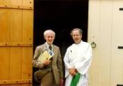
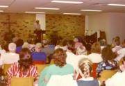
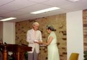

A hectic day in Brisbane9.51pm. We have finished at Brisbane today. Tomorrow we fly up to Townsville, then by car to Cardwell for a single meeting there. We have been relaxing a little this evening after a hectic day. I was first up to have a shower at 6am, and there was little time for breakfast before leaving on the hour-and-a-half car drive to Maroochydore. Heather got us there in good time for the 9am Eucharist at St Peter’s Church, where I spoke on True Repentance — the appointed theme — to a congregation of 150 or so. It was a charismatic service with choruses projected onto a screen, and only one hymn, “Crown Him with many crowns”, sung right at the end. There was a loud hum all through the service from the P.A. system. The microphone made a terrible noise soon after I began to speak and had to be switched off, although the hum continued. I spoke for no more than 15–20 minutes, a poor message, I felt, but blessed to a number of people who came to speak to me afterwards. In each of the meetings thus far I have forgotten to pray for the sick and did so again this morning until, after the service finished, three people came and asked for prayer. They were contacts of Graeme [Royce-Maguire] and had come specially to meet us. The Rector of the church was Andrew Baldwin, a younger man, very like Ray Cook in manner and appearance but taller. There was nothing in the service remotely uplifting, so far as any of us were concerned, but perhaps we were too tired. There was no time to stop for a cup of tea; and, after the long drive back, time only to snatch a bite to eat and lie down for ten minutes before leaving for the meeting at the YWCA hall in Brisbane. We got there a few minutes later, a little after 2.30pm, so the audience of 50 or more was already waiting. A newspaper reporter was there, but somehow I had forgotten that it had been advertised as a Royalist rally. Half-asleep or in some kind of haze, I read Isaiah 1 and down to 2:5 and, entirely forgetting my brief, I began preaching on that passage without in the end actually doing so. Only after the meeting did David remind me that I had not really spoken to the advertised subject, although I had brought in the Throne before the end. Not for the first time I was full of self-reproach for preaching a poor sermon (when did I ever preach a good one?), but the response was one of incredible appreciation: so many spoke of the great blessing they received. Also I called a prayer-line in which at least 15 people came forward; then, before David closed, a Mrs [ ] from the National Flag Association made a presentation of a video to me, which was very kind of them. I forgot to record that we began the meeting with all three verses of the National Anthem — the Royal Anthem they call it here — using the sheets we printed 26 years ago for the Plymouth Crusade [at the Guildhall]. After the meeting we took leave of David & Betty, who have been so kind and helpful in every way. It was David who planned all the meetings here, except this morning’s, which came through Bishop Wicks, whom Heather told us about. David took up an offering in the meeting for us: it amounted to $350. We also had $80 from the BIWF, which was very generous. Graeme phoned this evening to see how we were getting on, his third call since we got here. He thought Has the Sabbath Day Been Lost? was the best he had ever seen on the subject? ? Freda has been packing while I have been writing this. She has also written postcards to Margaret Sharpe, who always asks us to send her one, and to Rachel and James. The services and friends at St John’s and St Ben’s [back home in Glastonbury] have been much in my thoughts today. Many there are praying for us. |

At the door of St Peter’s Church, Maroochydore, Queensland, with the rector, Andrew BaldwinSpeaking at the Flag meeting, which had begun with singing all three verses of the Royal Anthem (as Australians call it)A member of the National Flag Assocation presents me with a video, the story of the Australian flag |